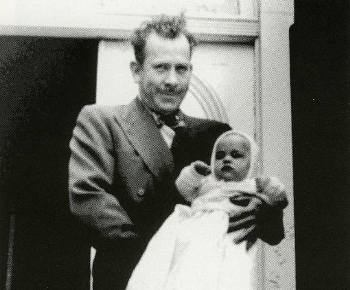
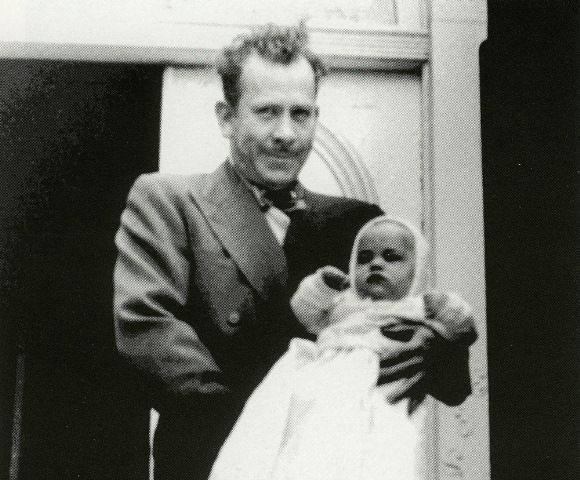

Едни хора познават Джон Стайнбек с романите му “На изток от рая”, “Гроздовете на гнева”, “За мишките и хората”, “Зимата на нашето недволство” и “Улица Консервна”. Други пък го свързват с нобеловата му награда. Малцина обаче познават Джон Стайнбек - писателя на писма до близките си, до редактора си, до влиятелни хора от обществото. Писмата на Стайнбек са искрени, прочувствени и разкриват повече за неговата натура от всеки друг негов труд. (могат да бъдат открити в “Steinbeck: A Life In Letters“). Днес ще ви представя едно от тях, адресирано до най-големия му син Том. То е от 1958 година и е в отговор на писмо от Том, в което тинейджърът обяснява, че се е влюбил...
Скъпи Том,
Получихме писмото ти тази сутрин. Ще ти отговоря според своята гледна точка, а Илейн, разбира се – според нейната.
Първо — ако си влюбен, това е хубаво нещо – това е може би най-доброто нещо, което може да се случи на някого.
Второ, има няколко вида любов. Едната е себелюбиво, зло, обсебващо, егоистично чувство, което използва любовта за самоважност. Тази е грозна и саката любов. Другата е изливане на всичко добро у теб – на милосърдие, съобразяване и респект – не само социалното уважение на обноските, но по-великото уважение, което е да признаеш друг човек за уникален и ценен. Първият вид може да те разболее, да те накара да се чувстваш нищожен и слаб, но вторият може да освободи в теб сила и кураж, и доброта, и дори мъдрост, които не знаеш, че притежаваш.
Ти казваш, че това е зряла любов. Щом я усещаш толкова дълбоко – разбира се, че е зряла любов.
Но не мисля, че ме питаш какво чувстваш. Ти знаеш по-добре от всеки друг. Това, с което искаше да ти помогна, е да разбереш какво да правиш с чувствата си – и това аз мога да ти кажа.
Ликувай за нея и бъди много доволен и благодарен за нея.
Обектът на любовта е най-добрият и най-красивият. Опитай се да живееш така.
Ако обичаш някого – не съществува възможност за вреда, ако го споделиш – само трябва да запомниш, че някои хора са много срамежливи и понякога признанието трябва да вземе предвид тази срамежливост.
Момичетата си имат начини да разберат или усетят как се чувстваш, но те обикновено искат и да го чуят.
Понякога се случва така, че на това, което усещаш, по една или друга причина не се отвръща – но това не прави чувството ти по-малко ценно или добро.
И накрая, аз знам какво изпитваш, защото аз го имам и се радвам, че го имаш и ти.
Ще се радваме да се запознаем със Сюзън. Тя е добре дошла. Илейн ще организира всичко, защото това е в нейната област и тя ще го направи с удоволствие. Тя също знае за любовта и може би ще ти помогне малко повече от мен.
И не се притеснявай да загубиш. Ако е правилно, случва се. Най-важното е да не се бърза. Нищо добро не се изплъзва.
С обич,
Татко
...

 
